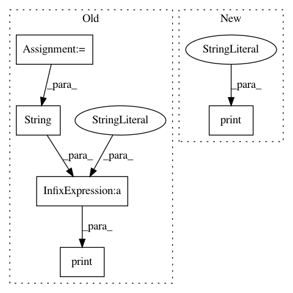

81933a874f108043a25f6980334f7242147ddf59,examples/example_mnist_tap_machine.py,,example_mnist_tap_machine,#,13
Before Change
num_hidden_units = 256
batch_size = 100
learning_rate = schedules.power_law_decay(initial=0.1, coefficient=0.1)
num_terms = 2
(_, _, shuffled_filepath) = \
util.default_paths(paysage_path)
// set up the reader to get minibatches
data = batch.HDFBatch(shuffled_filepath,
"train/images",
batch_size,
transform=batch.binarize_color,
train_fraction=0.95)
// set up the model and initialize the parameters
vis_layer = layers.BernoulliLayer(data.ncols)
hid_layer = layers.BernoulliLayer(num_hidden_units)
rbm = model.Model([vis_layer, hid_layer])
rbm.initialize(data, "glorot_normal")
perf = fit.ProgressMonitor(data,
metrics=["ReconstructionError",
"EnergyDistance",
"HeatCapacity"])
opt = optimizers.Gradient(stepsize=learning_rate,
tolerance=1e-4,
ascent=True)
sampler = fit.DrivenSequentialMC.from_batch(rbm, data)
sgd = fit.SGD(rbm, data, opt, num_epochs, sampler=sampler, method=fit.tap, monitor=perf)
// fit the model
print("Training with stochastic gradient ascent using TAP expansion to " + str(num_terms) + " terms.")
sgd.train()
util.show_metrics(rbm, perf)
valid = data.get("validate")
After Change
sgd = fit.SGD(rbm, data, opt, num_epochs, sampler=sampler, method=fit.tap, monitor=perf)
// fit the model
print("Training with stochastic gradient ascent using TAP expansion")
sgd.train()
util.show_metrics(rbm, perf)
valid = data.get("validate")
In pattern: SUPERPATTERN
Frequency: 3
Non-data size: 5
Instances
Project Name: drckf/paysage
Commit Name: 81933a874f108043a25f6980334f7242147ddf59
Time: 2017-05-18
Author: charleskennethfisher@gmail.com
File Name: examples/example_mnist_tap_machine.py
Class Name:
Method Name: example_mnist_tap_machine
Project Name: geekcomputers/Python
Commit Name: b13d18d4bbc1464f6bef38c601e48eb4e0d67cbb
Time: 2020-04-12
Author: 50592495+Prince326@users.noreply.github.com
File Name: Print_List_of_Even_Numbers.py
Class Name:
Method Name:
Project Name: thoughtworksarts/EmoPy
Commit Name: 7b6fd231d17cd1fd88c1fc163a33f1049d63e7b0
Time: 2018-04-26
Author: angelica.perez37@gmail.com
File Name: examples/convolutional_lstm_model.py
Class Name:
Method Name: